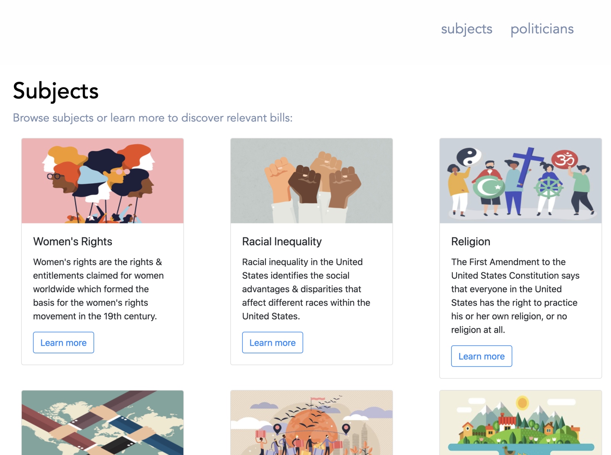
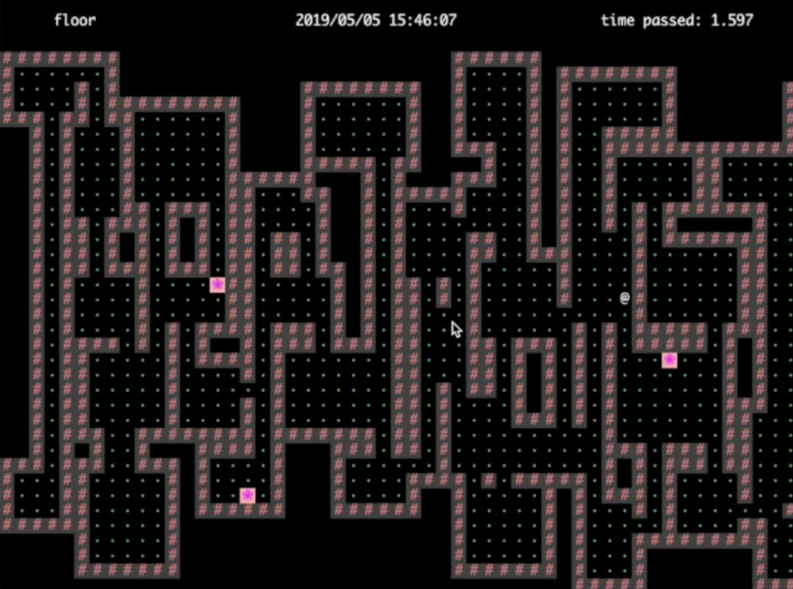
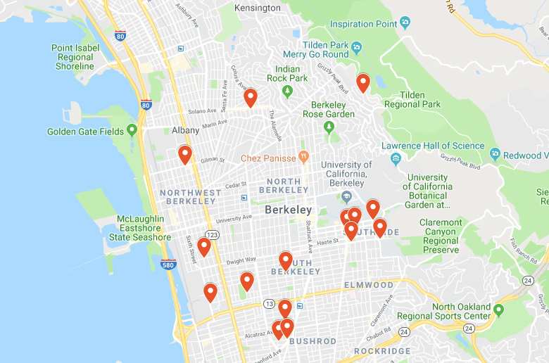
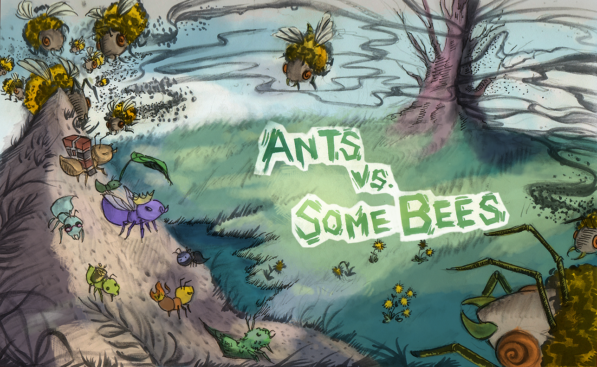

Projects
These are some of the projects I've worked on in the past.

Politigo
This is a project I worked on last summer with the other Girls Who Code interns at IAC. We developed this web application to inform users about important community issues, how to contact political representatives in their area, and what bills were being passed. We also included a section where users could find politicians pertaining to a specific subject or find bills relating to those subjects. I helped lead the front-end team in designing prototypes and building components in React. This was a full-stack project and we used React.js, Sass, GraphQL, and Node.js.

Build Your Own World
I worked on this project for my data structures class where I created an interactive game allowing users to move their avatars through a maze-like world to collect points to win. These maze-like worlds were randomly generated depending on the key the user decided to enter. I developed the algorithm to take this key and generate a world with rooms and hallways the user would travel through. I implemeted saving and loading to let users save their game status and revist later. There were three different levels, each one harder than the last. This game was implemented using Java and JavaScript.

Bear Maps
For this project, I developed the backend of a web mapping application that allowed users to navigate through Berkekey. Users could find directions for any buildings on campus as well as offices and restaurants off campus. I implemented an autocomplete and search system and a shortest route finder algorithm to help users easily find their way around the city and the campus. I also implemented a zoom feature so users could zoom in and out for clarity. This was built using Java.

Ants vs. Some Bees
I did this project for my introductory computer science class. I created a tower defense game inspired by Plants vs. Zombies. In this game, as the queen ant, you have populate your colony with different types of ants that will protect you from the enemy bees. The ants can help kill and drive out the bees by throwing leaves at them, else, the queen ant will die. This was implemented in Python using functional and object-oriented programming.